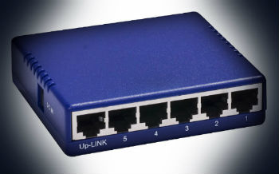
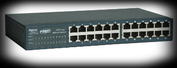

 ⇒ HUB riceve un segnale diretto da un computer ad un altro ma lo passa a tutti gli altri computer della rete.Il risultato è che una rete basata su HUB è più caotica e soffre di problemi di collisione (quindi è più lenta).
 ⇒ Uno SWITCH (più "intelligente") trasmette quel segnale solo al computer al quale è diretto. Una rete switch e molto piu' veloce di una rete Hub.